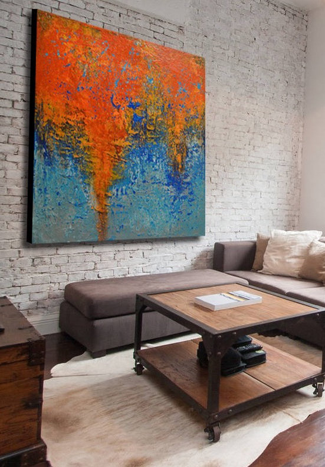
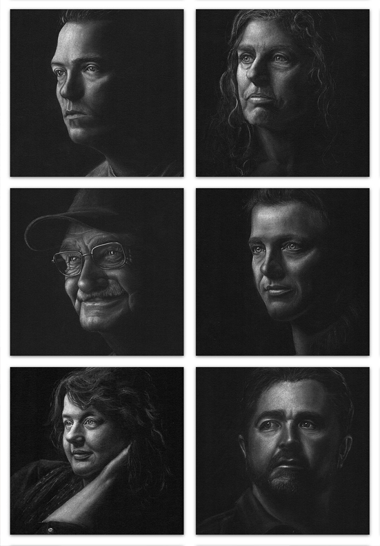

- Douglas Lail
- Home
- Experience
- Art

Hi, I’m artist Douglas Lail.
My home and studio are located in Asheville, NC.
My home and studio are located in Asheville, NC.
My industrial influenced mixed media abstractions are distinguished by multiple layers of texture, color and organic forms. I draw inspiration from vacant buildings in and around Asheville as well as other timeworn structures.
My current abstracts are gritty, less refined reminders of the ever-present tension between man and nature. These works combine non-traditional materials with a multilayer approach. This heuristic process involves numerous cycles of building up and stripping away.

As an artist, I also run a not for profit community out reach art project that fouces on the positive results of recovery it is called the Hello My Name Is project.
The "Hello My Name Is… Project" is a not-for-profit community outreach program sponsored by The Asheville Area Arts Council. Through this project we are building awareness that people do achieve and sustain recovery from alcohol, drugs, mental health, and other life challenges. Not only does recovery change the life of the individual, it also has a positive impact their family, on our community as well as society as a whole.